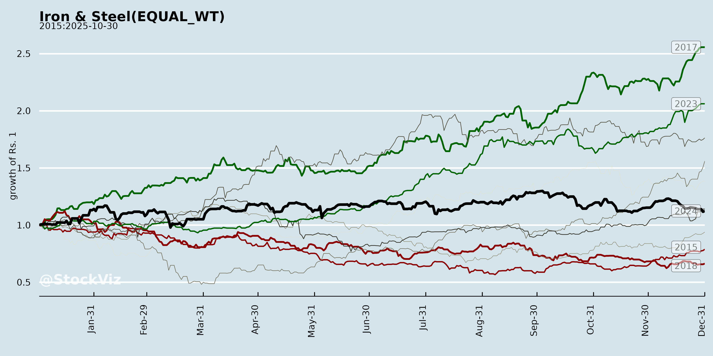
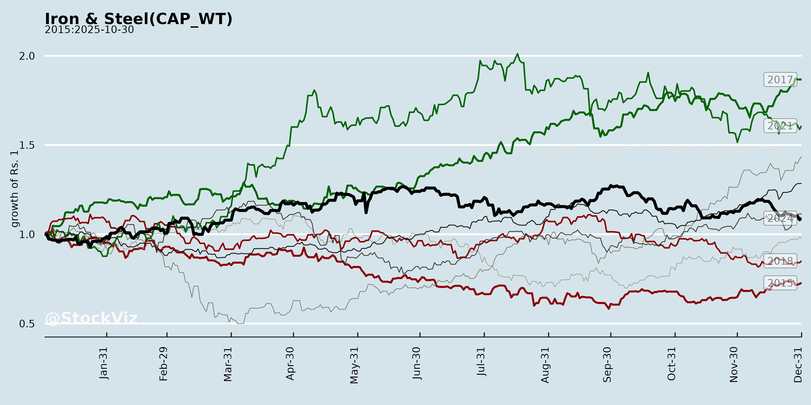
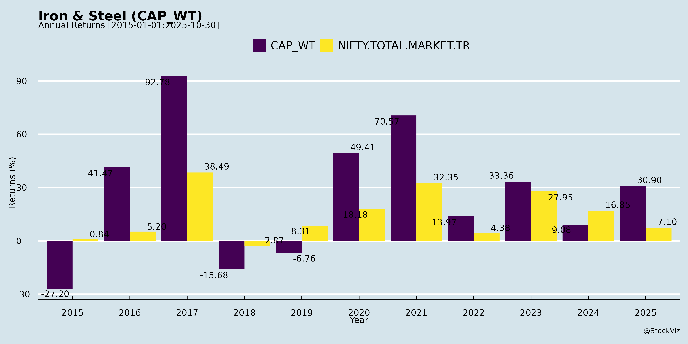
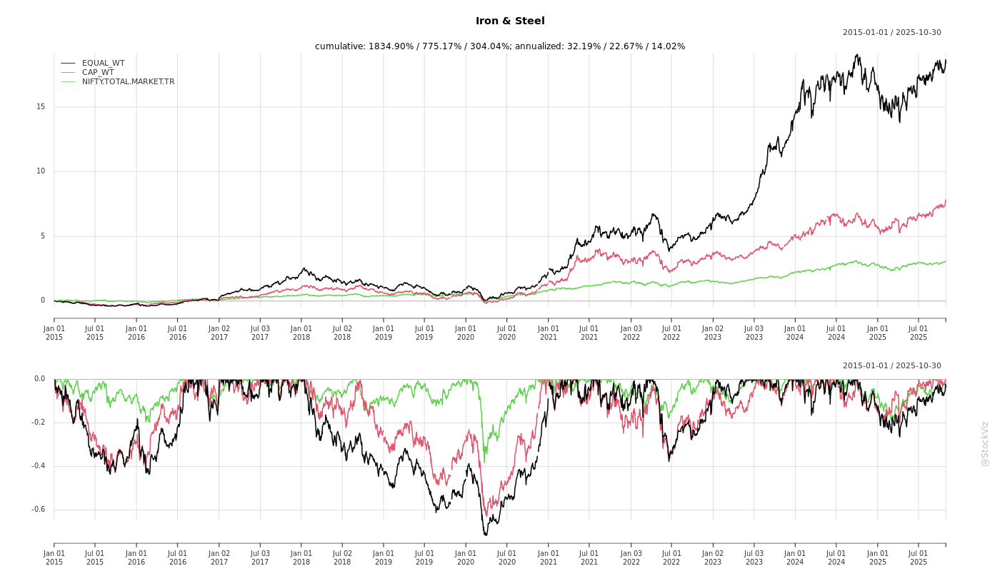
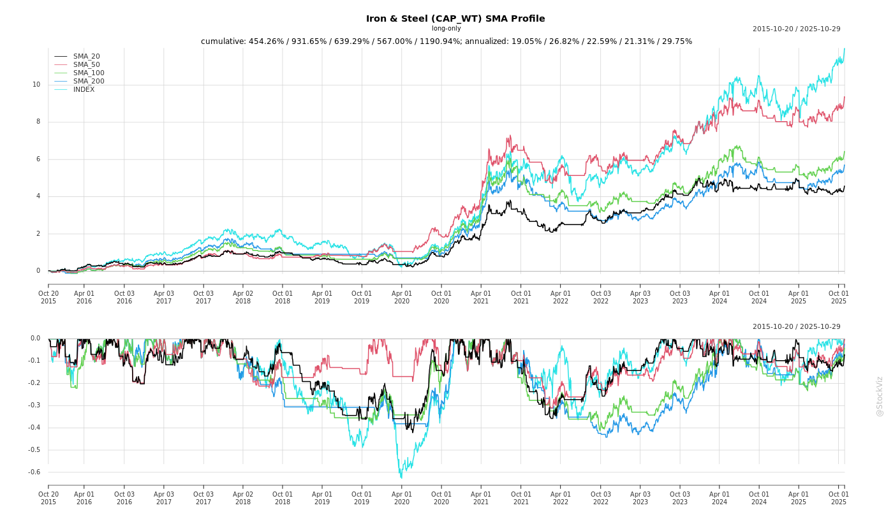

Iron & Steel
Industry Metrics
February 20, 2026
Annual Returns



Cumulative Returns and Drawdowns

SMA Scenarios


Current Distance from SMA
Rolling Returns
Market Cap
EBIT (% of Industry Total)
Revenue (% of Industry Total)
AI Summaries
Analyst
asof: 2025-11-30
Indian Iron & Steel Sector Analysis (Based on Provided Documents)
The documents from key players (Tata Steel, JSW Steel, Jindal Steel & Stainless, SAIL, Sarda Energy & Minerals, Jai Balaji) highlight a resilient sector amid cyclical pressures. India remains a bright spot with robust demand (8-12% YoY growth in H1 FY26), but faces global headwinds. Below is a structured summary:
Headwinds
- Pricing Pressure & Oversupply: Domestic HRC prices down Rs 1,500-2,300/ton QoQ (Tata Steel guidance); spot prices weak (longs flat, flats down Rs 1,200-1,300 in Oct). New capacities (JSW, JSPL, Tata expansions) outpacing demand; secondary producers expanding amid infra delays.
- Imports & Policy Gaps: Surge in cheap Chinese/substandard imports (up 7% YoY in UK); QCO suspension till Dec (Jindal Stainless); safeguard duty delays (Tata). UK/EU vulnerable to diversions from US/EU protections.
- Global/Regional Challenges: Chinese exports >100mt (impacting prices worldwide); UK EBITDA losses widening (Tata: -£66mn in Q2); EU CBAM uncertainties delaying restocking; weak UK/EU demand (UK flats down 33% since 2018).
- Input Costs: Coking coal up $6-10/ton QoQ (rupee depreciation); imported coal at Rs 17,400/ton (SAIL).
- Seasonal/Operational: Monsoon rains hit construction; capex/maintenance shutdowns (e.g., Tata UK, Sarda thermal).
Tailwinds
- Demand Strength: Double-digit steel consumption growth (JPC data); infra boom (metro 1,000km expansion, Vande Bharat, bridges); value-add segments up (Tata Tiscon +27% QoQ, Jindal pipes/tubes/elevators).
- Volume Momentum: Tata sales +17% H1 YoY; Jindal Stainless deliveries +15% YoY/+3% QoQ; SAIL sales +17% H1 YoY to 9.46mt.
- Cost Discipline: Tata’s global cost transformation (Rs 5,450cr H1, 94% on-plan); scrap/by-product sales boosted realizations (SAIL Rs 1,140cr in Q2); debt reductions (SAIL -Rs 3,384cr; Jindal Stainless net debt/EBITDA 0.73x).
- Policy Supports: EU quota cuts/tariffs aiding Netherlands (Tata); Indian PLI schemes (Delhi for stainless flats/longs); renewables boost (Jindal 42% utilization).
- Diversification: Power/mining strength (Sarda hydropower +32% YoY, IPP PLF 85%); downstream focus (coated, fabrication).
Growth Prospects
- Capacity/Volume Expansion: Tata: Neelachal (1→6mt longs, FID soon), Kalinganagar (8→13mt), Ludhiana EAF (0.8mt); Jindal Stainless: NPI (90% util.), Chromeni (70%), HRAP/SMS by FY27-end; SAIL debottlenecking (5-7% growth FY27); JSW/Jindal Steel meetings signal ramps.
- Downstream/Value-Add: Pipes to 4mt (Tata), stainless rebar/wire rod (Jindal), fabrication units; richer mix (cold rolling, galvanising).
- Power/Mining Synergies: Sarda: 75mw hydro +50mw solar by FY26; coal mines (Gare Palma to 3mt, Shahpur 0.6mt FY27); IPP expansion (600mw).
- Exports/Decarb: Post-CBAM clarity (EU protections from Jun’26); green initiatives (Tata EAFs, hydrogen; Jindal scrap/green H2).
- EBITDA Guidance: Tata India EBITDA/ton +Rs1,000 QoQ; Jindal Stainless on-track; sector FY26 volumes 9-12% growth.
| Key Metrics (H1 FY26 Aggregated) | Tata Steel (India Standalone) | Jindal Stainless | SAIL | Sarda Energy |
|---|---|---|---|---|
| Sales/Volumes Growth (YoY) | +20% deliveries | +12-15% | +17% | Power +32% hydro |
| EBITDA Growth (YoY) | +3% (15% margin) | +12% | +3% | Strong (70% from power) |
| Net Debt/EBITDA | 3x | 0.73x | Improving | <1x |
Key Risks
- Prolonged Oversupply/Prices: If infra delays persist; new capacities (7.5mt Tata pipeline) strain balances.
- Imports/Policy Delays: QCO/safeguard extensions; UK quota inaction (Tata EBITDA breakeven at risk).
- RM Volatility: Coal $6-8/ton up (rupee); iron ore linkages (Tata engaging OMC/NMDC).
- Execution/Regulatory: Expansions delayed by EC/land (Tata Neelachal); Netherlands decarbon FID (phased, €2bn support); Sarda approvals (forest clearance).
- Geopolitical/CBAM: Trade wars, EU melt-pour rules; carbon credits phasing (Netherlands 1.6t CO2/ton).
- Macro: Rupee depreciation; China exports to 120mt; weak UK/EU (Tata UK losses).
Overall Outlook: Sector poised for 10%+ volume growth FY26 driven by infra/demand, but margins compressed (11-15% EBITDA) until Q4 pickup. Integrated players (Tata, SAIL) with cost levers/debt reduction resilient; focus on value-add/power/mining diversification key. Risks tilted to policy/pricing, but tailwinds from domestic capex cycle strong.
Financial
asof: 2025-12-02
Indian Iron & Steel Sector Analysis: Q3 & 9M FY25 (Ended Dec 2024)
Based on the Q3 FY25 financial results of major players (JSW Steel, Tata Steel, Jindal Stainless, SAIL, NMDC Steel, Mukand, Manaksia Steels, etc.), the sector shows resilient volumes amid pricing pressures. Crude steel production grew (e.g., JSW hit record 7.03 MT in Q3), but revenues/PAT dipped YoY due to weak realizations. EBITDA margins held at 10-17% (JSW 13.5%, Tata 11.5%). Imports surged (India net importer per JSW), eroding margins. Overall, mixed performance: integrated players like JSW/Tata stable; smaller ones variable. Debt levels manageable (D/E 0.3-1.1x), but Europe ops (Tata) and new plants (NMDC Steel) drag.
Headwinds (Challenges)
- Weak Realizations & Revenue Pressure: QoQ/YoY declines (JSW rev -5% YoY standalone; Tata flat; SAIL -1%). Global slowdown, China exports, excess capacity hit prices.
- High Operating Costs: Raw materials (coking coal/iron ore up), power/fuel (JSW power 4k Cr Q3), employee costs elevated. Inventory build-ups (SAIL sub-grade fines ~4k Cr non-current).
- Imports Surge: Q3 imports 2.83 MT (-11% QoQ but +17% 9M YoY per JSW); probes ongoing but hurting domestic players.
- Exceptional Losses: Provisions/impairments (JSW ₹445 Cr coal/mine; Tata Europe restructuring; SAIL ₹283 Cr disputes).
- Qualified Audits/Legal Issues: SAIL/Tata face entry tax (₹100+ Cr disputes), power tariff recoveries (₹588 Cr advance at risk). Europe decarbonization costs (Tata provisions ₹2.5k Cr).
Tailwinds (Positives)
- Volume Resilience: Production/sales up (JSW +12% sales YoY; Tata India +3%; Jindal +7%). Domestic demand from infra/auto (IMF India GDP 6.4%).
- Cost Controls: Coking coal fall aided EBITDA (JSW +3% QoQ). Efficiency gains (JSW EBITDA/tonne ₹8.5k).
- Provisional Price Upsides: Rail price revisions (SAIL/JSW ₹1.6k+ Cr gains).
- Margins Holding: Operating EBITDA 11-17% (Jindal 12%; SAIL 11%). Debt service ratios >2x mostly.
- Govt Support: Capex revival, anti-dumping probes.
Growth Prospects
- Capacity Expansions: JSW Vijayanagar 5MTPA ramp-up (Q4 FY25); Jindal Indonesia SMS (3→4.2MTPA); Tata mergers adding scale.
- Infra/Rural Demand: Govt capex, Kharif harvest (JSW: 10% FY25 steel growth). Auto/exports recovery.
- Green Transition: JSW/Tata EAF plans, renewables (JSW 100% RE by 2030). PLI incentives (Jindal accruals).
- M&A: Jindal acquisitions (Chromeni, Glory Metal); Tata schemes.
- Outlook: IMF global steel steady; India 6.4% GDP, steel demand +10% FY25 (JSW).
Key Risks
| Risk Category | Details | Impacted Cos. |
|---|---|---|
| Imports/Competition | 8.2MT 9M FY25 (+17% YoY); safeguard probes ongoing. | All (JSW/Tata explicit) |
| Commodity Volatility | Coal/iron ore price swings; forex (imports). | JSW/SAIL/NMDC Steel |
| Debt/Leverage | D/E 0.4-1.1x; high interest cover risks (NMDC Steel negative). | NMDC Steel (losses), SAIL |
| Regulatory/Legal | Tax disputes (entry/Green Cess ₹389 Cr Tata); mine closures (JSW ₹445 Cr). Auditor qualifications (SAIL). | Tata/SAIL |
| Operational | Europe losses (Tata ₹2.9k Cr Q3); ramp-up delays (NMDC Steel losses ₹1.9k Cr 9M). Sub-grade inventory realizability (SAIL ₹4k Cr). | Tata/NMDC/SAIL |
| Geopolitical/Macro | Global slowdown (EU/China); inflation, tariffs (US). | Exports-heavy (JSW +44% QoQ) |
| ESG/Decarb | EU/Netherlands orders (Tata); high capex needs. | Tata/JSW |
Summary: Sector resilient on volumes/govt push but pressured by imports/pricing (headwinds dominate Q3). Tailwinds from costs/infra; growth via expansions (JSW/Tata lead). Risks high (imports/legal); monitor probes/debt. FY25 outlook: Modest recovery if imports curbed (EPS ~₹30-40 for leaders). Investors: Favor low-debt, integrated players (JSW/Jindal).
General
asof: 2025-11-30
Summary Analysis: Indian Iron & Steel Sector (Based on Provided Announcements)
The provided filings from key players (JSW Steel, Tata Steel, Jindal Steel & Stainless, Sarda Energy, NMDC Steel, Jai Balaji, Mukand, Manaksia Steels) offer snapshots of Q2/H1 FY26 performance, strategic moves, and disclosures as of Oct-Nov 2025. Overall, the sector shows resilient growth amid seasonal softness, driven by volume expansion, cost efficiencies from falling raw material prices, and infra/auto demand. However, regulatory hurdles and price volatility pose challenges. Below is a structured analysis of headwinds, tailwinds, growth prospects, and key risks.
Tailwinds (Supportive Factors)
- Strong Volume & Financial Performance: Jindal Stainless reported robust Q2/H1 FY26 consolidated results (Revenue +11% YoY to ₹10,893 Cr; EBITDA +17% to ₹1,388 Cr; PAT +33% to ₹808 Cr). Sales volume up 12-15% YoY; EBITDA margins stable at ~12-13%. Manaksia Steels saw standalone total income +134% YoY to ₹245 Cr in Q2, sales volume +184% YoY, driven by galvanized/pre-painted steel growth (+56-150% YoY).
- Declining Raw Material Costs: Nickel prices fell from ~₹22,300/MT (Q1 FY24) to ~₹15,000/MT (Q2 FY26); Ferrochrome from ~₹116,700/MT to ~₹106,000/MT (Jindal Stainless charts). Boosts margins amid steady steel demand.
- Demand Momentum: Festive uplift, GST cuts aiding autos; infra (flyovers, metros, coastal projects), railways (Vande Bharat shift to austenitic SS), pipes/tubes, and process industries (oil/gas/power) strong (Jindal Stainless). Manaksia notes roofing/cladding resilience.
- Raw Material Security: JSW Steel increased effective interest in Illawarra Metallurgical Coal to 30% (from 20%) via US$60 Mn investment, enhancing coking coal offtake rights.
- Sustainability Push: Sarda’s “RHINO” green rock wool launch (zero fossil fuels, 45-50% energy savings, 65% lower CO2) aligns with green building trends (IGBC Congress).
Headwinds (Challenges)
- Regulatory & Mining Issues: Tata Steel faces ₹2,411 Cr demand for chrome ore dispatch shortfall (Sukinda mine); plans legal challenge (similar prior demand stayed by Orissa HC). Highlights production/dispatch compliance risks.
- Price & Seasonal Pressure: Steel prices softened in Q2 (monsoon slowdown in construction/infra), impacting Manaksia EBITDA margins (standalone 4.95% vs. 5.24% YoY). Consolidated EBITDA negative in some metrics due to subsidiary dynamics.
- Margin Compression: Jindal Stainless EBITDA margins dipped QoQ (6%); Manaksia PAT margins down slightly YoY due to pricing.
- Non-Core Distractions: Jai Balaji closing dormant Ugandan WOS (no material impact); routine filings (NMDC NCD payment, Jindal earnings audio, Mukand AGM notice) indicate compliance focus but no major positives.
Growth Prospects
- Capacity Expansion & Value-Addition: Manaksia advancing ₹40 Cr colour-coating line (Q4 FY26 commissioning, +200% capacity); Aluzinc line at 75% utilization. Jindal Stainless targeting 4.2 MnT melt capacity by FY27 (from current ramp-up). Shift to coated/value-added products (galvanized, pre-painted, aluzinc) for higher margins.
- Sector Demand Drivers: Infra/urbanization (elevators, ROBs/FOBs); autos/railways (special grades, Vande Bharat); exports (~9% of sales, stable). Jindal Stainless outlook positive for Q3 FY26.
- International & Diversification: JSW’s Australian coal stake for supply security; Manaksia Nigeria subsidiary revenue +150% YoY (Naira stabilization aids). Sarda’s insulation entry taps green construction (37% global CO2 from buildings).
- Financial Health: Low net debt (Jindal Stainless: 0.7x Net Debt/EBITDA, AA/Stable ratings); cash buffers support capex. H1 FY26 PAT growth: Jindal +21%, Manaksia +120% consolidated.
Key Risks
- Regulatory/Legal Exposure: Mining shortfalls/demands (e.g., Tata’s ₹2,411 Cr + prior ₹1,903 Cr) could escalate; dependency on govt. approvals/mine development plans.
- Commodity Price Volatility: Steel/raw material fluctuations (e.g., recent softening); forex (Naira/USD for Manaksia exports).
- Demand Cyclicality: Seasonal monsoon/infra slowdowns; over-reliance on autos/infra (sensitive to elections/GST/economic cycles).
- Execution Risks: Capex delays (Manaksia lines); integration of acquisitions (JSW coal). High debt in some peers (though low here).
- Macro/External: Global CO2 regulations favoring green steel but raising costs; competition from imports/Chinese dumping.
Overall Outlook: Positive with cautious optimism. Tailwinds from volumes, cost relief, and infra capex outweigh headwinds. Sector poised for 10-15% growth in FY26 (aligned with Jindal/Manaksia trends), but monitor regulatory resolutions (Tata) and Q3 steel prices. Steel majors like JSW/Jindal Stainless demonstrate strategic resilience via M&A/diversification. Investors should watch Dec’25 quarterly results for sustained momentum.
Investor
asof: 2025-11-30
Summary Analysis: Indian Iron & Steel Sector (Based on Q2/H1 FY26 Earnings & Announcements)
The Indian iron & steel sector exhibits resilience amid global headwinds, driven by robust domestic demand and cost discipline. Key companies (Tata Steel, JSW Steel, Jindal Stainless/Steel, SAIL, Sarda Energy) reported strong volume growth (7-17% YoY) despite price softness, with EBITDA margins holding at 11-25%. Below is a structured analysis of headwinds, tailwinds, growth prospects, and key risks.
Headwinds (Challenges Pressuring Margins & Sentiment)
- Global Oversupply & Trade Disruptions: Chinese exports at 100-120 MT (Tata, JSW) flooding markets; tariffs/geopolitics depressing global prices (US $100+ premium over Europe/India).
- Domestic Price Pressure: HRC realizations down Rs1,500-2,300/t QoQ (JSW, Tata); rebar/HR softer by Rs4,500-6,000/t (SAIL); seasonal rains, extended monsoons delaying infra demand.
- Imports & Policy Gaps: Subsidized Chinese imports rising; QCO suspension till Dec’25 (Jindal Stainless); UK/EU quotas not tightened enough, leading to losses (Tata UK EBITDA -£66 Mn).
- Cost Inflation: Coking coal up $6-10/t QoQ (Tata/JSW); rupee depreciation adding ~Rs700/t; higher material costs in Europe (Tata NL).
- Operational Hiccups: Plant relinings/maintenance (JSW Kalinganagar, SAIL Bokaro), delays in restructuring (Tata NL people costs).
Tailwinds (Supportive Factors Boosting Volumes & Efficiency)
- Strong Domestic Demand: Steel consumption +8-12% YoY (SAIL); infra/metro (1,000 km expansion), autos/white goods, Vande Bharat driving 15-27% segment growth (Jindal Stainless, Tata).
- Volume Ramp-Up: Production/sales up 7-20% QoQ/YoY across firms (Tata India 5.65 MnT crude steel, JSW Steel group meetings); inventory drawdown aiding realizations.
- Cost Transformation: Tata Rs5,450 Cr savings in H1 (94% plan compliance); SAIL scrap/by-products +Rs250 Cr QoQ; lean coal mix, scrap usage (18-20% in Tata NL).
- Policy Wins: EU Steel Plan 2.0 (50% quota cut + tariffs) aiding Tata NL (Q4 uplift); potential India safeguards; PLI schemes (Delhi for stainless).
- Diversification: Power/hydro growth (Sarda +32% hydro, 85% IPP PLF); value-added (57% mix at SAIL, Tata Tiscon +27%).
Growth Prospects (Medium-Term Visibility: FY26-28)
- Capacity Expansion Pipeline: Tata (Neelachal 6-10 MnT longs, Kalinganagar 13-16 MnT, Ludhiana 0.8 MnT EAF, Meramandali); SAIL (IISCO 4.5 MnT @ Rs36,000 Cr, debottlenecking); Jindal Stainless (NPI 90% util., SMS Indonesia, HRAP/Cold Rolling FY27); JSW Steel group events signal ramps.
- Downstream/High-Margin: Pipes (Tata 4 MnT ambition), stainless rebar/wire rod (Jindal), colored steel (Tata BlueScope acquisition); ferrochrome optimization (Tata divestment).
- Power & Mines: Sarda (75 MW hydro, 50 MW solar FY26; coal to 3-5.2 MnT); captive iron ore/coal ramps reducing import reliance.
- EBITDA/Volume Guidance: Tata India EBITDA/ton up; SAIL 18.5 MnT sales FY26 (+5-7% FY27); Jindal Stainless 2.65 MnT FY26 (9-10% growth); sector volumes to 40-45 MnT (Tata).
- Sustainability: Decarbonization (EAFs, green H2, scrap); CBAM readiness (Tata NL 1.6 tCO2/t steel).
Key Risks (Potential Downside Catalysts)
- Import Surge/Policy Delays: No QCO/safeguards revival (India); UK inaction (Tata EBITDA breakeven at risk); CBAM clarity by Dec’25 (export drag for Jindal Stainless).
- Price/Commodity Volatility: Steel spreads unsustainable (UK/India); coking coal $6-8/t up in Q3 (Tata/SAIL); iron ore/coal index spikes.
- Execution Delays: Env./forest clearances (Tata Neelachal, Sarda coal/hydro); land acquisition (JSW Steel implied); NCLT/approvals (Sarda expansions).
- Geopolitical/External: China exports, EU/UK policy shifts; rupee weakness inflating imports.
- Leverage/Capex: Rising debt for expansions (SAIL net debt/EBITDA 3x target); wage revisions (SAIL 2027).
Overall Outlook: Sector poised for 8-10% volume growth FY26 amid infra tailwinds, but Q3 margins may compress 80-150 bps on prices/coal before Q4 recovery. Focus on cost discipline, policy support, and diversification to counter cyclicality; diversified players (Tata, Sarda) better positioned. Risks tilted toward trade/policy; monitor Dec’25 CBAM/QCO updates.
Meeting
asof: 2025-12-03
Indian Iron & Steel Sector Analysis (Based on Q2/H1 FY26 Results from Key Players: JSW Steel, Tata Steel, Jindal Steel, Jindal Stainless, SAIL, Sarda Energy, Jai Balaji, Mukand, etc.)
Tailwinds (Positive Drivers)
- Volume Resilience & Capacity Ramp-Up: Steady crude steel production (e.g., SAIL ~9.5 MT in H1 FY26, Jindal Steel 4.09 MT, Tata Steel India strong). Expansions underway: Jindal Steel commissioned 4.6 MTPA BF & 3 MTPA BOF at Angul (total capacity to 12 MTPA by FY26); JSW Steel increasing coal stake to secure raw materials; Tata Steel targeting 15.6 MTPA.
- Revenue & Profitability Growth: Consolidated revenues up (e.g., Tata Steel ~₹53k Cr H1, Jindal Steel ~₹28k Cr, Sarda Energy strong power/steel mix). EBITDA margins solid (Tata Steel 12-14%, Jindal Steel ~18% adjusted); PAT growth (SAIL +32% YoY H1).
- Cost Optimization & Debt Discipline: Raw material security via coal acquisitions (JSW 30% stake in Illawarra Coal); debt reduction (Jindal Steel net debt down to ₹14k Cr, net debt/EBITDA ~1.5x); forex gains aiding (Jindal Steel ₹227 Cr H1).
- Diversification: Renewables/power push (Tata Steel 26% in TPAL solar; Sarda hydro/ferro alloys); value-added steel (Tata 73% VAS sales).
Headwinds (Challenges)
- Margin Pressure: High finance costs (Tata Steel ₹1.85 Cr Q1, SAIL ₹484 Cr Q2); exceptional losses/provisions (SAIL ₹338 Cr gratuity hike; Tata impairments).
- Regulatory/Legal Disputes: Auditor qualifications across firms (SAIL: ₹1,146 Cr water charges, ₹448 Cr DVC advances, entry tax; Tata: UK/EU decarbonization funding uncertainties).
- Inventory/Asset Concerns: Sub-grade ore fines valuation risks (SAIL ₹3.8k Cr); discontinued ops (Mukand Industrial Machinery).
- Provisional Pricing: Heavy reliance on govt sales (SAIL ₹4.8k Cr H1 provisional).
Growth Prospects
- Capacity Expansion: Near-term to 15-20 MTPA+ (Jindal Steel 15.6 MTPA, Tata Steel Angul 12 MTPA); long-term via acquisitions/JVs (JSW Australian coal, Tata renewables).
- Export & VAS Focus: Rising exports (Jindal Steel 10% Q2); premium products driving margins.
- Raw Material Security: Coal stakes (JSW 30% Illawarra, Sarda coal mines); power self-sufficiency.
- Sustainability: Decarbonization (Tata Steel UK/EU plans); sector EBITDA could rise 15-20% with volumes.
Key Risks
- Commodity Volatility: Steel prices soft; raw material costs (coking coal).
- Regulatory Uncertainty: Tax disputes (entry tax, water/power tariffs); mining clearances (SAIL sub-grade fines dispatch delays).
- High Leverage: Debt/EBITDA 1.5-2x (Tata Steel 0.91x); forex exposure.
- Auditor Flags: Provisions needed for advances/taxes (SAIL ₹1.2k+ Cr); inventory recoverability.
- Execution Delays: Capex slippages (SAIL ₹4k Cr H1); geopolitical impacts on imports/exports.
- Geopolitical/Macro: Global steel oversupply; US/EU duties; domestic demand slowdown.
Overall Outlook: Sector resilient amid expansions (tailwinds dominate), but regulatory overhang & costs cap upside. PAT growth ~20-30% YoY possible; monitor debt & disputes. (Data from Q2/H1 FY26 filings; sector capex ~₹50k Cr supports 8-10% volume growth.)
Press Release
asof: 2025-12-03
Indian Iron & Steel Sector Analysis
Based on recent announcements from key players (JSW Steel, Tata Steel, Jindal Steel, Jindal Stainless, Sarda Energy & Minerals, Jai Balaji Industries, Prakash Industries) covering production updates, financial results (Q2/H1 FY26, Q3/9MFY25), expansions, and initiatives as of Oct-Dec 2025/Feb 2025.
Tailwinds (Positive Factors)
- Robust Production & Volume Growth: JSW Steel reported 24.95 LT consolidated crude steel (+9% YoY), Indian ops at 24.12 LT (+10% YoY); Tata Steel India production up 8% QoQ to 5.65 MnT, deliveries +17% QoQ; Sarda stable/growing volumes in pellets, sponge iron, ferro alloys; Prakash H1 sales ₹1,760 Cr.
- Capacity Expansions & Utilisation Resilience: JSW targeting 43.4 MTPA in 3 years (Vijayanagar BF3 upgrade to resume Feb’26, excl. BF3 util. ~92%); Jindal Steel commissioned 3 MTPA BOF at Angul (total 9 MTPA, eyeing 12 MTPA in FY); Jai Balaji ₹1,000 Cr capex on track for value-added products.
- Strong Financial Performance: Tata EBITDA +27% YoY H1 (₹16,585 Cr, 15% margin), India +16%; Sarda revenue +52% YoY H1, PAT +90%; Prakash H1 PAT ₹153 Cr (EPS ₹8.54); Jai Balaji 9M revenue +4.23%, EBITDA +10.28%.
- Downstream & Value-Addition Focus: Tata growing retail (Tiscon +27% QoQ), e-commerce (₹1,980 Cr GMV); Jai Balaji emphasis on DI Pipes/Ferro Alloys; Jindal Stainless loyalty program (‘JSL Saathi Pragati’) for P&T segment (30k+ retailers onboarded).
- Cost Discipline & Diversification: Tata cost savings ₹5,450 Cr H1; Sarda energy segment 47-72% of revenue/EBIT; Prakash captive coal (1.97 lac MT Q2).
- Sustainability Momentum: JSW/Tata multiple awards (ResponsibleSteel, CDP, worldsteel); decarbonisation projects (Tata NL LoI, JSW net-zero by 2050).
Headwinds (Challenges)
- Operational Disruptions: JSW util. 83% due to BF3 shutdown; Prakash impacted by extended monsoon (lower coal extraction); Jai Balaji Q3 revenue -3.42% YoY/-4.51% QoQ due to lower production/sales realisations.
- Pricing & Realisation Pressure: Jai Balaji noted declines in finished steel; Sarda “lower realisations” despite volume stability; Tata UK EBITDA loss £107 Mn H1 (halved YoY but subdued demand/quotas).
- Global/Macro Pressures: Tata: “persistent overhang of tariffs, geopolitical tensions, elevated steel exports”; Jai Balaji: China’s macroeconomic trends impacting commodities.
- Overseas Weakness: Tata NL improved (EBITDA doubled YoY) but UK losses persist; JSW USA flat.
Growth Prospects
- Domestic Demand Revival: Infra/construction boost post-monsoon/GST reforms (Prakash); Tata/Jai Balaji downstream expansion (auto, engineering, retail); JSW Vijayanagar (17.5 MTPA single-site).
- Capex-Driven Scale-Up: JSW/Jindal expansions to add 10+ MTPA short-term; Tata capex ₹7,079 Cr H1; Prakash >1 MnT coal FY target.
- Digital & Ecosystem Plays: Jindal Stainless QR/app for authenticity/rewards; Tata e-platforms tripling YoY.
- Energy/Minerals Synergies: Sarda power (thermal/hydro/coal) as 70% EBIT driver; Prakash captive coal for steel-making.
- Export/Specialty Shift: JSW/Jindal focus on high-value/special steel; Tata NINL lever for long products.
- Sustainability Edge: Green steel (renewables by 2030), certifications aiding premium pricing/export access.
Key Risks
- Demand/Price Volatility: Subdued infra/auto demand, China exports, safeguard quotas (Tata UK); monsoon/geopolitical impacts.
- Execution Delays: Shutdowns (JSW BF3), capex overruns (all firms note in disclaimers).
- Cost Inflation: Wage hikes, raw material fluctuations, FX on overseas debt (Tata net debt ₹87,040 Cr).
- Competition & Policy: Intense rivalry, import tariffs, govt. incentives withdrawal (forward-looking statements).
- Debt & Liquidity: Tata gross debt ₹95,643 Cr (reduced QoQ); high capex amid EBITDA pressures.
- External Shocks: Political instability, economic slowdowns, counterfeit issues (Jindal Stainless).
Overall Summary: The sector shows resilience with YoY production/financial growth (9-52% across metrics) driven by expansions and cost controls, but faces near-term headwinds from shutdowns, pricing weakness, and global tensions. Tailwinds from infra demand and downstream focus support moderate growth (8-15% YoY volumes/EBITDA) in FY26, with risks tilted toward execution/macro factors. Leaders like JSW/Tata poised for outperformance via scale/sustainability.
Copyright © 2023 SAS Data Analytics Pvt. Ltd. All rights reserved.